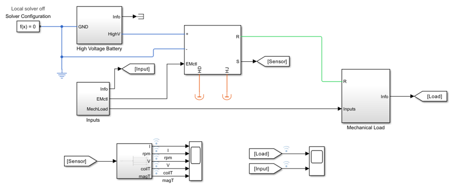
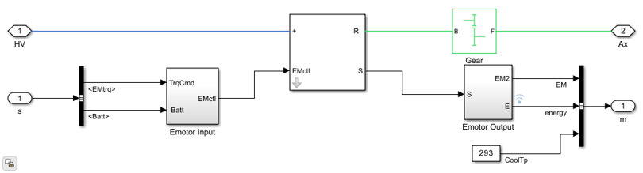

Generate Motor and Inverter Loss Maps
Workflow — Generates loss data across motor operating points.
Electric traction motor, inverter, gearbox, losses, and thermal behavior
Component path: Components / MotorDrive

Electric motor drive unit component for the BEV system model. The motor drive converts electrical energy from the HV battery into mechanical torque delivered to the driveline through a fixed gear. Multiple fidelity levels are available, progressing from a fast electrical-only model through thermal-coupled and lubrication-aware variants.
Use MotorDriveGear for fast electrical-mechanical studies, MotorDriveGearTh when motor and inverter temperatures feed vehicle or durability results, and MotorDriveLube when gearbox oil losses and gearbox thermal states must close the efficiency balance.
| Model | Description | Use case | Templates | Documentation & files |
|---|---|---|---|---|
| MotorDriveGear | Lumped motor with fixed gear at constant temperature. | Fast vehicle-level range estimation and controller tuning where motor thermal behavior is not needed. | VehicleElectric, VehicleElecAux | Documentation · Parameters |
| MotorDriveGearTh | Full thermal coupling with motor and inverter coolant jacket. | Electro-thermal vehicle simulations where motor and inverter temperatures affect performance and range. | VehicleElectroThermal | Documentation · Parameters |
| MotorDriveLube | Adds gearbox oil losses and thermal interface to the drive unit. | High-fidelity powertrain studies including gear lubrication effects on efficiency and thermal behavior. | VehicleElectroThermal | Documentation · Parameters |
Workflow/Vehicle/RangeEstimation/) — Motor drive losses directly affect vehicle range. MotorDriveGearTh is the default for electro-thermal runs.Workflow/MotorDrive/GearRatioSelect/) — Batch simulations compare winding and magnet temperatures across candidate gear ratios and report thermal Pass/Fail for each drive cycle.Workflow/MotorDrive/GenerateMotInvLoss/) — Detailed PMSM test bench and loss map generation for motor and inverter.Workflow/MotorDrive/InverterLife/) — Junction temperature cycling from the thermal motor model is used to predict inverter power module lifetime.Workflow/MotorDrive/ThermalDurability/) — Drive-unit thermal behavior over extended duty cycles.
Workflow — Generates loss data across motor operating points.
Workflow — Uses the electrothermal drive and shared thermal test bench.
Workflow — Compares motor thermal response across candidate ratios.
Workflow — Uses inverter junction-temperature histories.
Vehicle workflow — Uses MotorDrive with battery and driveline components.
All three fidelities use torque and battery-status inputs, an HV electrical port, and an axle shaft port. MotorDriveGearTh and MotorDriveLube also read motor-speed feedback and add coolant ports. Use Simscape logging to inspect the thermal states computed by the selected model.
| Port / signal | Direction | Description |
|---|---|---|
s.EMtrq | Input | Requested motor torque from the controller. |
s.Batt | Input | Battery relay state and HV bus voltage. |
s.EMrpm (thermal fidelities) | Input | Motor-speed feedback. |
HV | Conserving | High-voltage electrical connection. |
Ax | Conserving | Mechanical rotational axle connection. |
A, B (thermal fidelities) | Conserving | Thermal-liquid connections to the drive-unit coolant loop. |
m.EM | Output | Motor measurement sub-bus. |
m.energy | Output | Cumulative energy consumption. |
m.CoolTp (MotorDriveGear, MotorDriveLube) | Output | Fixed coolant temperature in MotorDriveGear; measured coolant temperature in MotorDriveLube. |
Uses the shared Emotor library for independent drive-unit verification.
Run the maintained MotorDrive test case before integration.
Loss Map Generation | Select Gear Ratio | Thermal Durability